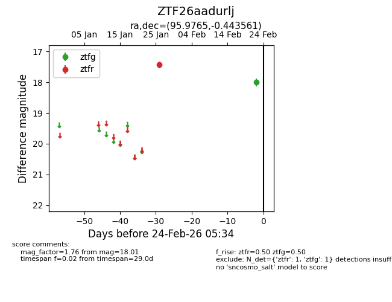
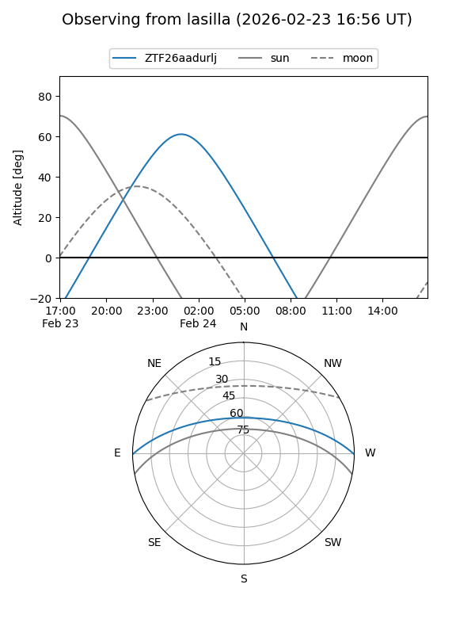
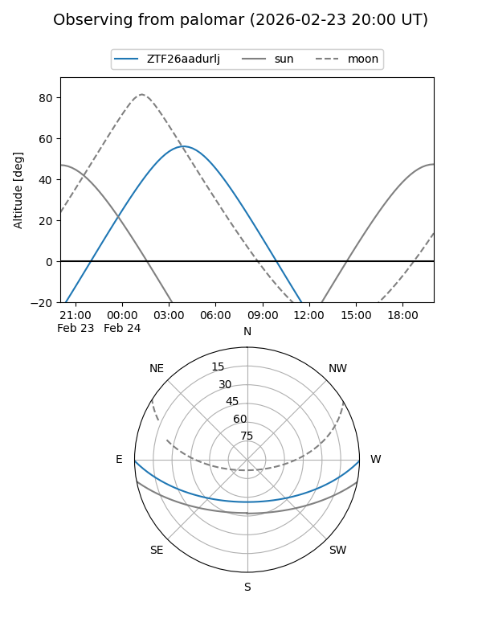

ZTF26aadurlj
Target ZTF26aadurlj at 2026-02-24 09:08
Aliases and brokers:
FINK: link
Lasair: link
ALeRCE: link
alt names
ZTF26aadurlj (ztf,fink_ztf)
Coordinates:
equatorial (ra, dec) = 95.9765,-0.44356
equatorial (HMS+DMS) = 06:23:54.37,-00:26:36.82
galactic (l, b) = (210.1780,-6.32593)
Flags:
Photometry:
last ztfg=18.01, ztfr=17.44
1 ztfg, 1 ztfr detections
Lightcurve

Visibility


Additional plots